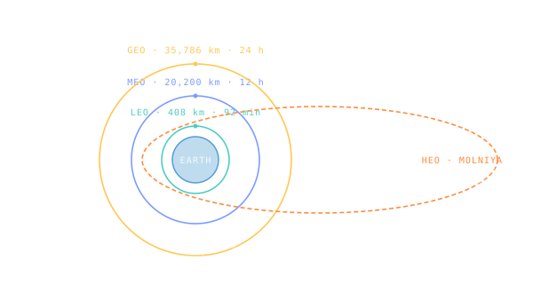

Orbit Regimes — LEO, MEO, GEO, HEO
Earth orbits cluster into four altitude bands; each one is a different mission compromise between latency, lifetime, and cost.

101 · zoom in
Pick a satellite. The most important thing about it isn't what it does — it's what altitude it lives at. Altitude sets how often it can see the same patch of ground, how long it takes a radio signal to reach it, how much fuel it needs to maintain orbit, and what its useful lifetime is. Spacecraft engineers cluster orbits into four bands — LEO, MEO, GEO, HEO — because the trade-offs change discretely as you climb.
LEO is up to ~2,000 km. The ISS lives at 408 km. Hubble at 540 km. SpaceX's Starlink at ~550 km. Cheap to reach (most rockets can throw a payload here), but you whip around the planet every 90 minutes, the atmosphere drags you down (lifetime: years without reboost), and you only see any one ground spot for ~10 minutes per pass.
MEO is 2,000–35,786 km — the GPS / Galileo / Beidou band, plus some communications. Periods are 2-12 hours; you cover the globe with fewer satellites than LEO, and you're above most of the radiation belts' worst zones (carefully chosen). GEO sits exactly at 35,786 km — period exactly 24 hours — so a satellite there hovers over the same point on Earth forever, which is why every weather and broadcast comsat is up there.
HEO (highly-elliptical orbit) is the wildcard — high apogee, low perigee, long dwell time over a chosen latitude. Russia's Molniya orbits are HEO, optimised for high-latitude coverage that GEO can't reach. Each regime is a different mission philosophy, encoded as a number on the y-axis.
LEO (Low Earth Orbit, < 2,000 km altitude): cheapest to reach, fastest period (~90 minutes for ISS at 408 km), shortest ground-link delay (a few ms), shortest lifetime due to residual atmospheric drag. Hosts the ISS, Hubble, Starlink, most Earth observation satellites, all crewed activity beyond Apollo.
MEO (Medium Earth Orbit, 2,000–35,786 km): the navigation band. GPS at 20,200 km, GLONASS at 19,100 km, Galileo at 23,222 km, Beidou MEO at 21,500 km. Period ~12 hours; constellations of 24-30 satellites give global coverage. Above the inner Van Allen belt, below most of the outer.
GEO (Geostationary Earth Orbit, 35,786 km altitude exactly, 0° inclination): period equals Earth's sidereal day (23h 56m 4s) so the satellite appears stationary above one longitude on the equator. Hosts the world's broadcast TV, weather imagery (GOES, Himawari, Meteosat), and traditional comsats. Light-time round-trip ~240 ms — perceptible in voice calls.
HEO (Highly-Elliptical Orbit): low perigee + high apogee. Molniya orbits (Russia) sit at perigee ~600 km, apogee ~40,000 km, inclination 63.4° — chosen so the apogee dwell happens over the northern hemisphere where GEO comsats can't reach. Critical for high-latitude communications and some early-warning constellations.
Crossing regimes is expensive. ∆v from LEO to GEO is about 3.9 km/s. From LEO to escape (TLI/TMI) is about 3.2 km/s — counter-intuitively cheaper than reaching GEO from LEO, because you don't have to circularise on arrival.